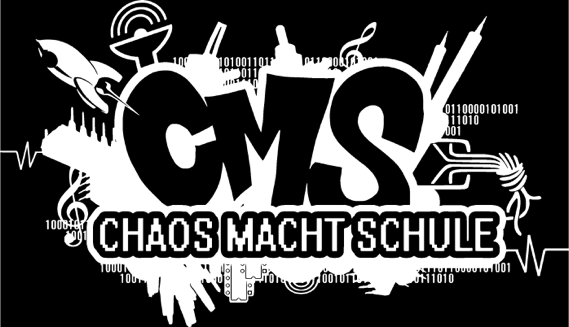
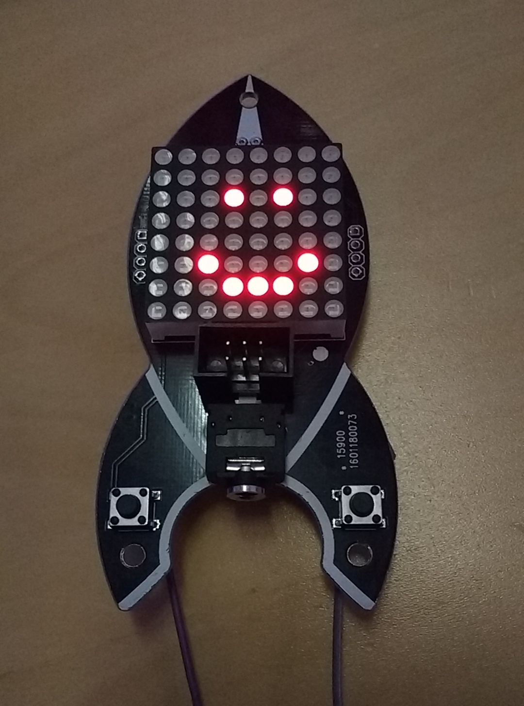
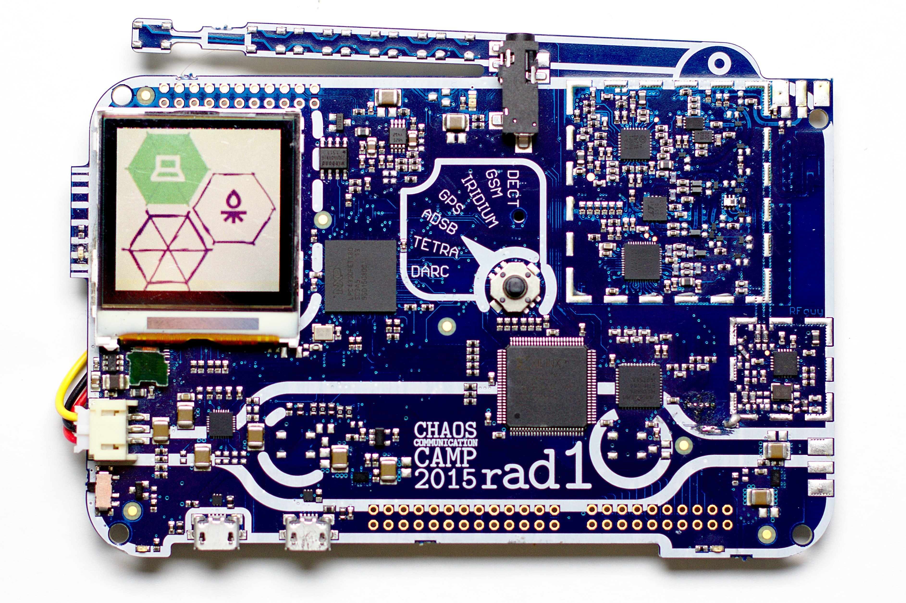
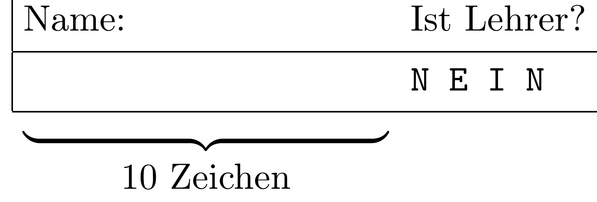
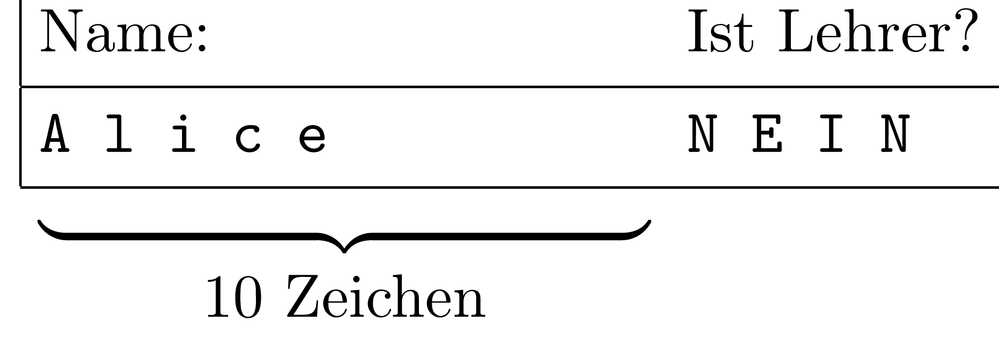
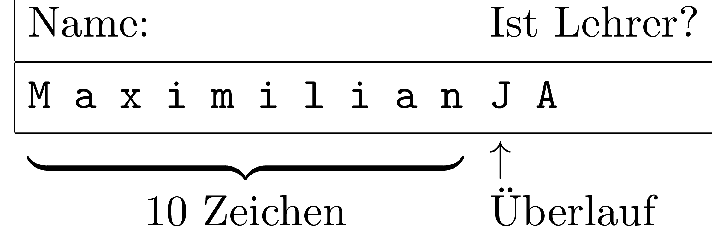

class: center, middle # Was ist Hacken?  --- # Agenda 1. Motivation 2. Kisten 4. Hackerethik 3. Beispiele --- # Was braucht man zum Hacken? * Lötkolben * Rechner * Editor * Compiler * Browser * ein interessantes Gerät * andere Hacker * Hackerspace --- # Kisten - Ziel: Was ist in den Kisten? - Belohnung in den Kisten? - ohne Gewalt öffnen - nicht auseinanderbauen - Hinterlasst die Kisten so, wie ihr sie vorgefunden habt. - Die Lösung ist vielleicht unkonventionell. - Fragt nach Hinweisen. - Fragt die anderen Gruppen. --- # Hackerethik * Der Zugang zu Computern und allem, was einem zeigen kann, wie diese Welt funktioniert, sollte unbegrenzt und vollständig sein. * Alle Informationen müssen frei sein. * Mißtraue Autoritäten – fördere Dezentralisierung * Beurteile einen Hacker nach dem, was er tut, und nicht nach üblichen Kriterien wie Aussehen, Alter, Rasse, Geschlecht oder gesellschaftlicher Stellung. * Man kann mit einem Computer Kunst und Schönheit schaffen. * Computer können dein Leben zum Besseren verändern. * Mülle nicht in den Daten anderer Leute. * Öffentliche Daten nützen, private Daten schützen. --- name: Beispiele # Beispiele --- template: Beispiele ## Dieselgate * Autohersteller schummeln auf bei der Abgasmessung * Prüfstanderkennung * Felix Domke liest Steuersoftware seines VW aus * Er findet die Funktionen, die die Prüfstanderkennung durchführen. * Er weist nach, dass die Abgasreinigung abgeschaltet wird, wenn der Prüfzyklus nicht erkannt wird. * [Video](https://media.ccc.de/v/32c3-7331-the_exhaust_emissions_scandal_dieselgate) --- template: Beispiele ## Seidenstraße * Rohrpost aus Drainagerohr * Kapseln aus 1,5l PET-Flaschen * Kapseln aus dem 3D-Drucker * Antrieb mit Industriestaubsaugern * [Video](https://media.ccc.de/v/30C3_-_5610_-__-_saal_2_-_201312271245_-_seidenstrasse_-_m_-_jeff_mann_-_frank_-_diani_barreto) --- template: Beispiele ## SS7 * Protokoll mit dem die (Mobil-)Telefonnetze untereinander kommunizieren * Wo befindet sich ein Teilnehmer? * SMS-Services per SS7 * ursprünglich wenige Dienste mit SS7-Zugang => wenig Sicherheitsmaßnahmen * immer mehr Dienste mit SS7-Zugang => ungeschützter Zugang zu Services wie * Lokalisierung von Teilnehmern * Videos * [SS7: Locate. Track. Manipulate.](https://media.ccc.de/v/31c3_-_6249_-_en_-_saal_1_-_201412271715_-_ss7_locate_track_manipulate_-_tobias_engel) * [Locating Mobile Phones using SS7](https://media.ccc.de/v/25c3-2997-en-locating_mobile_phones_using_ss7) --- template: Beispiele ## Lampe mit RhaspberryPi * RhaspberryPi (günstigr ARM-basierter Minirechner) * LED-Strip per SPI ansteuern * Steuerung über Webapp * Steuerung über HomeKit * Animationen * Farbe nach Zeit --- template: Beispiele ## Samsung 8 Iris Scanner .center[<iframe width="560" height="315" src="https://media.ccc.de/v/biometrie-s8-iris-fun/oembed" frameborder="0" allowfullscreen></iframe>] --- template: Beispiele ## Blinkenrocket .right[ <figure>  <figcaption>https://wiki.chaosdorf.de/ (CC BY 3.0)</figcaption> </figure> ] * Bausatz zum Löten Lernen * 8x8 LED * Animationen * Laufschrift * [Website](http://blinkenrocket.de/) --- template: Beispiele ## rad1o .right[ <figure>  <figcaption>Christoph Krichenbauer (CC BY-NC-SA)</figcaption> </figure> ] * Badge vom Chaos Communication Camp 2015 * SDR (Software Defined Radio) * [Website](https://rad1o.badge.events.ccc.de/) --- template: Beispiele ## Kongress * jedes Jahr vom 27.12. - 30.12. * großes Vortragsprogramm * Assemblies * Erfas und chaos-nahe Gruppen zeigen sich und ihre Projekte * Louge * Kidspace * Engel --- template: Beispiele ## Camp .right[<iframe width="560" height="315" src="https://www.youtube.com/embed/YKmEYTuVcY8?list=PLd4ivY6k8sKZmzPGBYNtATKEG8PSeeXqd" frameborder="0" allowfullscreen></iframe>] * alle 4 Jahre * tausende Hacker treffen sich * auf dem Acker * mit Internet * und Geräten * mit Vorträgen --- class: middle # Hacken ist... .large[ * kreativer Umgang mit Technik und Gesellschaft * Spass am Gerät ] --- # Hacken und IT-Sicherheit .large2[ * Finden, * Ausnutzen, * Beheben und * Veröffentlichen von Sicherheitslücken in Computersystemen ] --- # Was sind Sicherheitslücken? .large2[ * ausnutzbare Fehler im Programmcode oder der Konfiguration * mangelnde Überprüfung von Benutzereingaben * falsche Annahmen über die Umgebung * ... ] --- # Wo gibt es Sicherheitslücken? .right[<iframe width="560" height="315" src="https://www.youtube.com/embed/Ed1OjAuRARU?start=30" frameborder="0" allowfullscreen></iframe><br> Ronen et al.: http://iotworm.eyalro.net/] .large2[ * Betriebssysteme * Desktopanwendungen, <br> Apps, Websites * Eingebettete Systeme, <br> Internet of Things * Drucker, Lampen * Autos, Kraftwerke ⇒ überall ] --- # Beispiel: Speicherüberlauf .large2[ * Die Eingabe ist größer als der reservierte Speicherplatz ]  --- # Beispiel: Speicherüberlauf .large2[ * Eingabe von `"Alice"` ]  --- # Beispiel: Speicherüberlauf .large2[ * Eingabe von `"MaximilianJA "` ]  --- # Beispiel: Injection .large2[ Login mit Benutzername und Passwort * Wähle Benutzer mit Namen <u> </u>, wenn <br> das Passwort gleich <u> </u> ist. ] -- .large2[ * Wähle Benutzer mit Namen <u> `administrator` </u>, wenn <br> das Passwort gleich <u> `geheim` </u> ist. ] -- .large2[ * Wähle Benutzer mit Namen <u> `administrator` </u>, wenn <br> das Passwort gleich <u> `geheim ist oder 1=1` </u> ist. `\(1 = 1\)` ist immer wahr ⇒ Anmeldung ohne Kenntniss des Passwortes möglich ] --- # Wer sucht Sicherheitslücken? .large2[ * Wissenschaftler * Firmen * Privatleute * ... * Kriminelle * Geheimdienste ] --- # Wieso veröffentlichen? .large2[ * Geheimhaltung schützt nicht * Öffentliche Schwachstellen lassen sich nicht ignorieren Beispiel: WannaCry (Mai 2017) * über 200.000 Computer infiziert * Lücke war der NSA bekannt ] --- class: middle, center .huge[ Fragen? ]